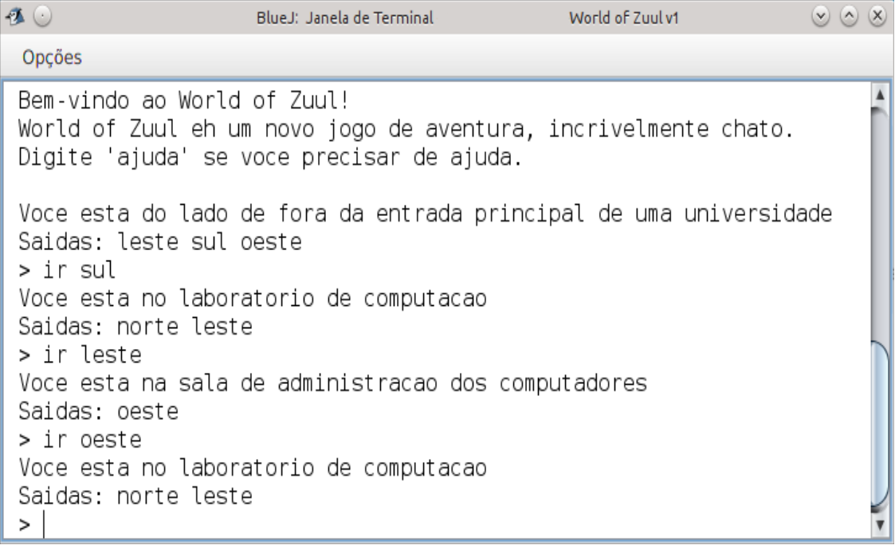
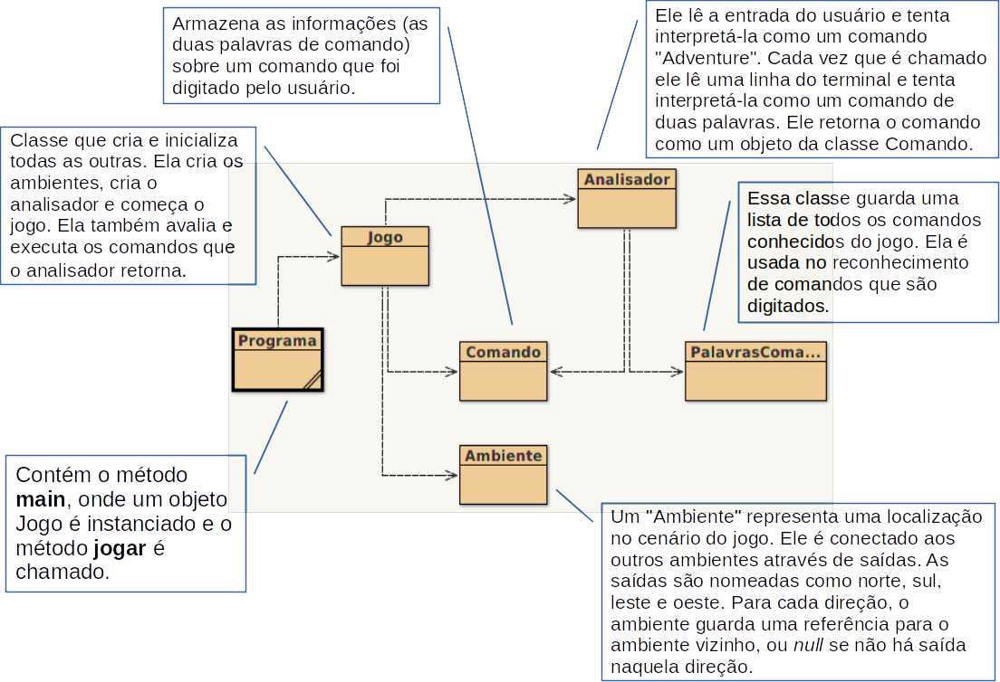
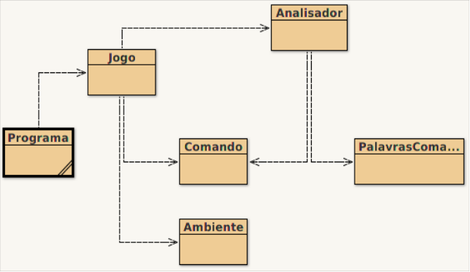

Design de Classes:
Coesão e Acoplamento
Departamento de Computação Aplicada - UFLA
Conteúdo desta Aula

- Design de Classes:
- Acoplamento
- Coesão
- Duplicação de Código
- Design Baseado na Responsabilidade
- Acoplamento Implícito
- Refatoração
Design de Classes
O que torna o design de uma classe bom ou ruim?
É possível implementar uma aplicação que funcione, mas onde as classes estão mal projetadas.
- O fato de uma aplicação executar corretamente não significa que ela esteja internamente bem estruturada.
Nesta aula, veremos alguns princípios de que devem ser seguidos para termos um bom design de classes.
Design de Classes
Quais os problemas de um design ruim?
- Geralmente os problemas surgem durante a manutenção.
- Quando se deseja fazer alterações em uma aplicação existente.
- Mas os problemas podem aparecer ainda durante a implementação.
- Uma implementação com estrutura inicial ruim pode tornar o desenvolvimento mais complexo, dificultando ou impossibilitando a sua conclusão.
Lembre-se que frequentemente uma empresa mantém, estende e vende uma aplicação por vários anos.
- Portanto, se ele for mal projetado, os custos de manutenção ao longo desses vários anos podem ser muito maiores do que o necessário.
Design de Classes
Usaremos um jogo chamado World of Zuul para ilustrar os conceitos que discutiremos a seguir.
Ele é um jogo de exploração de ambientes e aventura, mas sem interface gráfica. Basicamente deve-se ler a descrição de um abiente e escrever textos que representam comandos a serem realizados no jogo.

Esse jogo, no estilo Adventure, foi inspirado em um jogo criado na década de 70 que fez muito sucesso: Colossal Cave Adventure.
Design de Classes
O Jogo World-of-Zuul
- Em seu formato original, o jogo ainda não está muito interessante.
- Ele está incompleto!
- Desse modo, veremos como estender a sua implementação, discutindo os apectos do design de classes existente.
- Perceberemos que essa versão original tem exemplos de decisões de design ruins.
- Veremos como isso influencia nossas tarefas e como corrigi-las.
- O problema de um design ruim normalmente não está relacionado com a complexidade do problema que se deseja solucionar.
- O design ruim está mais relacionado com as decisões que tomamos durante a solução do problema.
Entendendo a Modelagem do Jogo

Design de Classes
Como avaliar se um design de classe é bom ou ruim?
- Dois parâmetros são fundamentais para isso:
- Acoplamento.
- Coesão.
Acoplamento
O que é acoplamento (coupling)?
- Refere-se à interconectabilidade das classes.
- Lembre-se que as classes se relacionam quando seus objetos se comunicam.
- Quanto mais as classes se relacionam umas com as outras, mais forte é o acoplamento.
O que desejamos em termos de acoplamento?
- Trabalhamos para enfraquecer o acoplamento em um sistema.
- Ou seja, cada classe deve ser o mais independente possível e se comunicar com outras por meio de uma interface pequena e bem definida.
Acoplamento
Por que devemos buscar o acoplamento fraco?
- Em uma estrutura de classe fortemente acoplada, uma alteração em uma classe pode obrigar a alteração em várias outras classes.
- Ou seja, uma pequena alteração em uma classe pode se propagar pela aplicação toda.
Resumindo, quanto mais acopladas forem as classes, mais difícil se torna realizar alterações em um sistema.
Coesão
O que é coesão?
- Refere-se à quantidade e diversidade de tarefas sob responsabilidade de uma unidade de uma aplicação.
- Uma unidade pode ser: um método, uma classe ou um conjunto de classes (pacote).
O que se espera em termos de coesão?
- Um bom design de classe exibe um grau elevado de coesão.
- Em um sistema com alto grau de coesão:
- Cada método é responsável por apenas uma tarefa bem definida (deve implementar uma operação lógica).
- Uma classe deve representar um tipo de entidade.
Coesão
Para que buscamos um alto grau de coesão?
- Para maximizarmos a reutilização de código.
- Se um método é responsável por apenas uma tarefa bem definida, é muito mais provável que ele possa ser reutilizado.
- Se uma classe representa uma única entidade, maior é a chance de ela ser reaproveitada em um contexto diferente.
Duplicação de Código
Duplicação de código é um indicador de design ruim!
- A duplicação ocorre quando em uma aplicação um mesmo segmento de código aparece mais de uma vez em diferentes pontos do código.
Por que a duplicação deve ser evitada?
- Porque qualquer alteração realizada em um trecho de código duplicado, terá que ser realizada em mais de um ponto do código.
- Se a pessoa responsável pela manutenção não perceber a duplicação e fizer alterações em apenas um ponto do código, o sistema se torna inconsistente (bug).
- Além disso, a duplicação leva ao desperdício de tempo durante a fase de implementação do sistema.
Duplicação de Código no Jogo
Veja esses dois métodos da classe Jogo: ambos imprimem informações sobre a localização atual.
private void irParaAmbiente(Comando comando){
//Código inicial omitido...
if (proximoAmbiente == null) {
System.out.println("Nao ha passagem!");
} else {
ambienteAtual = proximoAmbiente;
System.out.println("Voce esta " +
ambienteAtual.getDescricao());
System.out.print("Saidas: ");
if(ambienteAtual.saidaNorte != null) {
System.out.print("norte ");
}
if(ambienteAtual.saidaLeste != null) {
System.out.print("leste ");
}
if(ambienteAtual.saidaSul != null) {
System.out.print("sul ");
}
if(ambienteAtual.saidaOeste != null) {
System.out.print("oeste ");
}
System.out.println();
}
}private void imprimirBoasVindas(){
//Código inicial omitido...
System.out.println("Voce esta " + ambienteAtual.getDescricao());
System.out.print("Saidas: ");
if(ambienteAtual.saidaNorte != null) {
System.out.print("norte ");
}
if(ambienteAtual.saidaLeste != null) {
System.out.print("leste ");
}
if(ambienteAtual.saidaSul != null) {
System.out.print("sul ");
}
if(ambienteAtual.saidaOeste != null) {
System.out.print("oeste ");
}
System.out.println();
}O problema é a falta de coesão dos métodos! Os dois métodos fazem duas coisas:
- irParaAmbiente: altera localização e exibe localização atual.
- imprimirBoasVindas: imprime boas vindas e exibe localização atual.
Como Corrigir a Duplicação de Código?
Criaremos um método cuja única tarefa será imprimir as informações da localização atual.
- Com isso, os dois métodos anteriores podem fazer chamada a este método quando precisarem imprimir a localização atual.
private void imprimirLocalizacaoAtual(){
System.out.println("Voce esta " + ambienteAtual.getDescricao());
System.out.print("Saidas: ");
if(ambienteAtual.saidaNorte != null) {
System.out.print("norte ");
}
if(ambienteAtual.saidaLeste != null) {
System.out.print("leste ");
}
if(ambienteAtual.saidaSul != null) {
System.out.print("sul ");
}
if(ambienteAtual.saidaOeste != null) {
System.out.print("oeste ");
}
System.out.println();
}Suponha que precisemos alterar o nosso sistema porque um ambiente passou a ter saídas para cima e para baixo.
- Na configuração anterior precisaríamos alterar dois pontos do código.
- Agora precisaremos alterar apenas o método
imprimirLocalizacaoAtual.
Atributos Públicos
Atributos públicos significam design ruim!
- Já vimos que atributos de uma classe devem ser privados.
- Agora entenderemos o que acarreta a escolha de se utilizar atributos públicos.
Por que o uso de atributos públicos resulta num design de classes ruim?
- Porque aumenta o grau de acoplamento entre as classes!
- De que forma isso acontece?
- Se precisarmos alterar a forma ou estratégia de representação dos dados de uma classe com atributos públicos, essa alteração precisará ser realizada em todos os lugares onde os atributos públicos são utilizados. Certamente isso não é desejado!
Atributos Públicos no Jogo
No nosso jogo, a classe Ambiente possui atributos públicos, os quais são acessados diretamente na classe Jogo.
//Código da classe Jogo
if(direcao.equals("norte")) {
proximoAmbiente = ambienteAtual.saidaNorte;
}
if(direcao.equals("leste")) {
proximoAmbiente = ambienteAtual.saidaLeste;
}
if(direcao.equals("sul")) {
proximoAmbiente = ambienteAtual.saidaSul;
}
if(direcao.equals("oeste")) {
proximoAmbiente = ambienteAtual.saidaOeste;
}O que acontece se quisermos incrementar nosso jogo adicionando duas novas saídas: para cima e para baixo?
- Para fazer essa alteração teríamos que alterar a classe
Ambientee modificar a classeJogopara ajustar os if’s que tratam os ambientes. - Isso ocorre porque a classe
Jogoestá conhecendo como a classeAmbientetrata os dados, sendo que ela deveria conhecer apenas o que a classeAmbientefaz.
Como Corrigir os Atributos Públicos?
public class Ambiente{
private String descricao;
private Ambiente saidaNorte;
private Ambiente saidaSul;
private Ambiente saidaLeste;
private Ambiente saidaOeste;
public Ambiente getAmbiente(String direcao){
if(direcao.equals("norte")) return saidaNorte;
if(direcao.equals("sul")) return saidaSul;
if(direcao.equals("leste")) return saidaLeste;
if(direcao.equals("oeste")) return saidaOeste;
}//Restante do código omitido
}- Primeiro vamos esconder (private) os atributos da classe
Ambiente. - Em seguida, criamos um método
getAmbienteque recebe por parâmetro a direção e retorna o ambiente correspondente.
O que isso muda na classe Jogo?
- Na classe
Jogo, ao invés de acessarmos diretamente os atributos da classeAmbiente, agora chamamos o métodogetAmbiente.
//Código da classe Jogo
if(direcao.equals("norte")) {
proximoAmbiente = ambienteAtual.getAmbiente("norte");
}
if(direcao.equals("leste")) {
proximoAmbiente = ambienteAtual.getAmbiente("leste");
}
if(direcao.equals("sul")) {
proximoAmbiente = ambienteAtual.getAmbiente("sul");
}
if(direcao.equals("oeste")) {
proximoAmbiente = ambienteAtual.getAmbiente("oeste");
}Incrementando o Jogo
Agora desejamos acrescentar opções de saídas nos ambientes.
- Gostaríamos de acrescentar as saídas para cima e para baixo.
- Inicialmente poderíamos pensar e colocar mais dois atributos na classe
Ambiente.
Mas e se no futuro eu decidir adicionar ainda mais opções de saída?
Se estamos definindo um conjunto de dados que pode aumentar, deveríamos trabalhar com atributos compostos (vetores/coleções).
Portanto, vamos usar uma coleção denominada HashMap.
- Um objeto dessa classe é como um dicionário que possui uma chave e um valor.
- Esse tipo de estrutura permite buscarmos o valor a partir da chave.
Incrementando o Jogo
import java.util.HashMap;
public class Ambiente{
private String descricao;
private HashMap<String, Ambiente> saidas; //Armazena os ambientes que são saídas do ambiente atual
public Ambiente(String descricao){
this.descricao = descricao;
saidas = new HashMap<String,Ambiente>(); //A chave (String) representa a direção e o valor é o ambiente
}
public void ajustarSaida(Ambiente norte, Ambiente sul, Ambiente leste, Ambiente oeste){
saidas.put("norte", norte); //Adicionamos cada ambiente no HashMap com seu respectivo valor
saidas.put("sul", sul);
saidas.put("leste", leste);
saidas.put("oeste", oeste);
}
public String getDescricao(){
return descricao;
}
public Ambiente getAmbiente(String direcao){
return saidas.get(direcao); //Para obter um elemento do HashMap basta fornecer a chave correspondente
}
}Incrementando o Jogo
Adicionando as saídas para cima e para baixo.
- Para adicionarmos as saídas para cima e para baixo basta acrescentarmos parâmetros ao método ajustarSaidas da classe Ambiente.
Pensando no futuro…
- Mas e se no futuro eu desejar ter ainda mais saídas?
- Como podemos deixar nossa classe
Ambientemais genérica?- Podemos alterar o método
ajustarSaidasde modo que se permita ajustar uma saída por vez. - Desse modo, o usuário da classe pode definir a direção que ele quiser.
- Podemos alterar o método
Um bom design de classes tenta antecipar possíveis necessidades futuras de alterações no código!
Pensando no Futuro…
public class Ambiente{
private String descricao;
private HashMap<String, Ambiente> saidas;
public Ambiente(String descricao){
this.descricao = descricao;
saidas = new HashMap<String,Ambiente>();
}
public void ajustarSaida(String direcao, Ambiente ambiente){
saidas.put(direcao, ambiente); //Agora podemos definir a direção desejada e o ambiente correspondente
}
public String getDescricao(){
return descricao;
}
public Ambiente getAmbiente(String direcao){
return saidas.get(direcao);
}
public String getSaidas(){ //Método que gera uma string com todas direções de saída exsitentes
String textoSaidas = "";
for (String direcao : saidas.keySet()){ //KeySet retorna uma coleção com as chaves do HashMap
textoSaidas = textoSaidas + direcao + " ";
}
return textoSaidas;
}
}Design Baseado na Responsabilidade
O grau de acoplamento também é influenciado pelo design baseado na responsabilidade.
Mas o que significa design baseado na responsabilidade?
- É o processo de projetar classes atribuindo responsabilidades bem definidas a cada classe.
- A ideia é que cada classe deve ser responsável por tratar seus próprios dados.
- Ou seja, quem deve manipular um dado é a classe que o contém!
Quando precisamos adicionar uma nova funcionalidade em uma aplicação, em qual classe devemos adicionar o método que implementa essa nova funcionalidade?
- Na classe responsável pelos dados que serão manipulados por esse novo método.
Design Baseado na Responsabilidade - Jogo
Suponha que queiramos adicionar um porão embaixo do escritório.
Como podemos adicionar esse novo ambiente no jogo?
- Para isso, precisamos alterar apenas o método
criarAmbientesna classeJogo.
//Código da classe Jogo
private void criarAmbientes(){
Ambiente fora,anfiteatro,cantina,lab,escritorio,porao;
// Cria outros ambientes...
porao = new Ambiente("porao abaixo do escritorio");
// Inicializa as outras saidas dos ambientes...
escritorio.ajustarSaida("baixo", porao);
porao.ajustarSaida("cima",escritorio);
}Essa inclusão de ambiente ficou simples de ser feita devido às alterações realizadas na classe Ambiente, que tornaram as responsabilidades mais bem divididas.
Design Baseado na Responsabilidade - Jogo
Suponha que queiramos adicionar itens aos ambientes.
Qual o melhor lugar para acrescentá-los?
- Na classe
Ambiente, afinal eles farão parte do ambiente.
Para isso, precisamos alterar outras classes além da classe Ambiente?
- Sim, a classe
Jogotambém precisará ser alterada para passar a chamar um método da classeAmbienteque permita a exibição dos itens.
Como poderíamos evitar a alteração da classe Jogo a cada novidade inserida no ambiente?
- Criando um método na classe
Ambiente(p.ex., getDescricaoLonga) que retorna um texto descrevendo tudo que existe no ambiente. - Desse modo, futuras inclusões de elementos nos ambientes resultariam em alterações apenas na classe
Ambiente.
Minimizando Alterações
Devemos criar um design de classe que facilite alterações futuras localizando os efeitos de uma alteração.
- Ou seja, idealmente apenas uma classe precisa ser alterada para se fazer uma modificação.
Ocasionalmente, pode acontecer de alterações serem necessárias em mais de uma classe ao se fazer uma modificação no sistema.
- Nesses casos, as alterações necessárias em outras classes devem ser óbvias, fáceis de detectar e executar.
Acoplamento Implícito
Vimos que o uso de atributos públicos pode aumentar o grau de acoplamento entre classes.
- Isso significa que pode ser necessário fazer alterações em mais de uma classe por causa de uma simples modificação no código.
- Portanto, sabemos que atributos públicos devem ser evitados.
Mas há uma forma de acoplamento ainda pior. Você sabe qual?
- O acoplamento implícito!
Acoplamento Implícito
O que é o acoplamento implícito?
- Ele ocorre quando uma classe depende de informações internas de outra, mas essa dependência não é obvia.
Qual a consequência do acoplamento implícito?
No caso dos atributos públicos, se eles forem alterados somente na classe que os define, a aplicação deixará de compilar corretamente e o erro será apontado.
No entanto, nos casos de acoplamento implícito, a omissão de uma alteração necessária pode não ser detectada pelo compilador.
- Com isso, o código compila corretamente, mas a aplicação deixa de funcionar corretamente, ou seja, ela não faz o que deveria ser feito.
Acoplamento Implícito no Jogo
Suponha que queiramos adicionar o comando observar ao conjunto de comandos válidos do jogo.
O objetivo desse novo comando é permitir ao usuário visualizar a descrição do ambiente atual, pois podemos não nos lembrar mais das saídas possíveis para aquele ambiente.
Onde devemos fazer essa alteração?
Na classe PalavrasComando, adicionando ao vetor de palavras conhecidas o comando observar.
O que acontecerá ao testarmos essa alteração?
- Quando executamos o jogo e digitamos o comando observar, nada acontece. Por que?
Acoplamento Implícito no Jogo
//Classe Jogo
private boolean processarComando(Comando comando){
boolean querSair = false;
if(comando.ehDesconhecido()){
System.out.println("Eu nao entendi o que voce disse...");
return false;
}
String palavraDeComando = comando.getPalavraDeComando();
if (palavraDeComando.equals("ajuda")){
imprimirAjuda();
}else if (palavraDeComando.equals("ir")){
irParaAmbiente(comando);
}else if (palavraDeComando.equals("sair")){
querSair = sair(comando);
}else if (palavraDeComando.equals("observar")){ // 1
observar();
}
return querSair;
}
private void observar(){ // 2
imprimirLocalizacaoAtual();
}Precisamos de mais algumas alterações para o código funcionar:
- Alterar o método
processarComandopara que ele considere o comando observar. - Inserir o método
observarpara que as informações sobre a localização atual sejam exibidas.
Acoplamento Implícito no Jogo
Após as alterações anteriores, o jogo funcionará corretamente?
Não! Por que?
- Para responder essa pergunta pense no que acontecerá se digitarmos o comando ajuda.
- Veja que o comando observar não é listado.
- Aqui ocorre o acomplamento implícito!
- Isso acontece porque a classe
Jogodepende dos dados da classePalavrasComando.- Mas isso está implícito e não deu erro de compilação!
Resolvendo o Acoplamento Implícito no Jogo
Vamos colocar um método na classe PalavrasComando que retorna uma string com todos os comandos válidos.
- Agora basta que a classe
Jogochame esse métodogetComandos, correto?

- Humm… Mas veja que a classe
Jogonão tem uma referência para a classePalavrasComando!- Acrescentar essa referência significa aumentar o acoplamento.
- Como resolver isso sem aumentar o grau de acoplamento?
Resolvendo o Acoplamento Implícito no Jogo
Basta a classe Analisador ter um método que faça a intermediação entre as classes Jogo e PalavrasComando.
- Agora basta que a classe
Jogochame esse método getComandos da classeAnalisador, que por sua vez chamará o método getComandos da classePalavrasComando.
Desse modo, fazemos o que precisamos sem aumentar o grau de acomplamento entre as classes.
Coesão de Classes
Incrementando nosso jogo…
- Imagine que agora queremos adicionar itens aos ambientes de nosso jogo.
- Cada ambiente pode conter um item.
- Cada item tem uma descrição e um peso.
Qual a solução?
- Uma solução simples seria adicionarmos dois atributos à classe
Ambiente: descricaoItem e pesoItem. - Essa solução funcionaria?
- Sim, mas ela fere o princípio da coesão. Por que?
- Um item é uma entidade (ele tem os atributos descrição e peso) e, por isso, deveria ter sua própria classe.
- Portanto, a melhor solução é criar uma classe separada para itens e a classe
Ambientepassar a ter objetos do tipoItem.
Refatoração
Apesar de tentarmos projetar aplicações pensando nas possíveis alterações futuras, nem sempre conseguimos prever todas as adaptações futuras.
- É aí que entra a refatoração!
O que é refatoração?
- É a atividade de reestruturação de classes e métodos existentes para adaptá-los a alterações de funcionalidades e requisitos.
Ao longo do tempo…
- É muito comum precisarmos adicionar mais código a uma classe ou um método.
- Fazendo isso, a coesão pode começar a ficar ruim, fazendo sentido dividir a classe e/ou método em outras classes e/ou métodos.
- Se isto não for feito, mais tarde as alterações podem se tornar mais complicadas.
Refatoração
Nunca refatore sem escrever testes antes!
- A realização de testes é fundamental nesse processo de refatoração.
- Ao refatorarmos um sistema que já está em uso, estamos realizando alterações potencialmente grandes, o que atesta a importância da realização de novos testes.
- Se os testes não são feitos, um cliente que reclamava de um problema, pode passar a reclamar de vários outros após a refatoração.
Refatoração
Recomendações:
- O sistema deve ter um conjunto de testes adequado para suas funcionalidades. Se eles não existem, devem ser criados antes das atividades de refatoração.
- A refatoração deve ser feita primeiro mantendo as funcionalidades que já existiam (sem acrescentar nenhuma funcionalidade nova).
- O sistema refatorado deve passar pelo conjunto de testes para garantir que não foram criados novos bugs em coisas que já funcionavam.
- Somente depois disso é que devem ser acrescentadas as novas funcionalidades e, inclusive, os novos testes para elas.